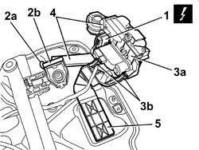

7005N20 FRONT SIDE DOOR LOCK MOTOR/CATCH ASSEMBLY, LEFT OR RIGHT - R.R WITH DOOR PANEL AND SUPPORT FRAME REMOVED
- Path
- Procedures > 70 FITTINGS > 7005 PASSENGER COMPARTMENT FRONT SIDE DOORS > 7005N FRONT DOOR CENTRAL LOCKING SYSTEM > 7005N20 FRONT SIDE DOOR LOCK MOTOR/CATCH ASSEMBLY, LEFT OR RIGHT - R.R WITH DOOR PANEL AND SUPPORT FRAME REMOVED
- Kind
- repair procedure (removal / refitting; the operation number is the code)
- Applies to
- all engines; all production periods
- Interactive page
- https://sloeber94.github.io/elrnDB/alfa/159/en/#/939011147
Applies to: all engines; all production periods
 Removing
Removing
 Refitting
RefittingOp. 7005D24 FRONT DOOR WINDOW REAR GUIDE - R R
1. Disconnect the electrical connection.
Description | Component |
|---|---|
DRIVER'S FRONT DOOR LOCK GEARED MOTOR | |
PASSENGER SIDE FRONT DOOR LOCK GEARED MOTOR |
2. Release the seal (2a) for the rod (2b) from the frame.
3. Release the lock (3a) from the retainers (3b) for the support.
4. Keep the lock complete with rod.
5. If necessary, keep the lock support.

Applies to: all engines; all production periods
Refitting
Removing- Check that the lock is not damaged.
- If removed, place the lock support in position.
- Attach the lock to the support retainers.
- Fit the rod seal on the frame.
- Connect the electrical connection.
Topics linked from this page (3)
- 7005D24 FRONT DOOR WINDOW REAR GUIDE - R R
- N050 DRIVER'S FRONT DOOR LOCK GEARED MOTOR
- N051 RIGHT FRONT DOOR LOCK GEARED MOTOR
Topics that link to this page (6)
- A033 ALARM ACTIVATION ACOUSTIC SIGNAL IRREGULAR
- 70C CHECK ON DOOR LOCK MICROSWITCHES
- 5505B10 FRONT DOOR WIRING (ONE), LEFT OR RIGHT - R.R. WITH WATER GUARD OR FRAME DETACHED
- 5505B11 FRONT DOOR WIRING (ONE) LEFT OR RIGHT - R.R
- 7005N21 FRONT SIDE DOOR LOCK MOTOR/LOCK ASSEMBLEY FOR ONE DOOR, LEFT OR RIGHT - R.R.
- 7205E37 STRIPPING FRONT SIDE DOOR INTERIOR SUPPORT FRAME